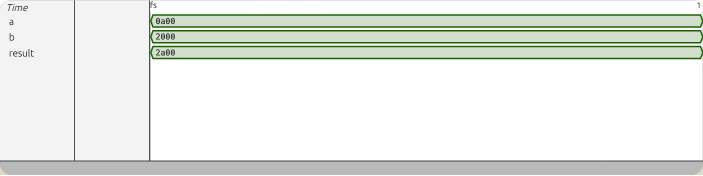

Modules communicate through ports. Each port has a direction (input, output, or inout) and a type.
The most common type is logic — a 4-state value that can be 0, 1, X (unknown), or Z (high-impedance). Vectors use a range: logic [7:0] is 8 bits wide.
Combinational logic is driven by a continuous assign statement — it updates the output wire instantly whenever any input changes. Open adder.sv and add the missing assign line that produces sum from a and b.
Every design needs a testbench (tb.sv) — a separate module that drives inputs and checks outputs. It is never synthesized; it only runs in simulation.
The testbench instantiates the design under test (the adder) and connects its ports by name:
adder dut(.a(a), .b(b), .sum(result));
An initial block runs once at time zero. Here it sets a = 10 and b = 32, then after a 1-unit delay prints the result with $display.
After running the code, you should see the correct sum of 42 (0x2a) in the Waves tab:

The SRAM we'll build uses exactly these port conventions — input we, input addr, input wdata, output rdata — just with a more interesting body that holds data in a flip-flop array rather than computing it combinationally.